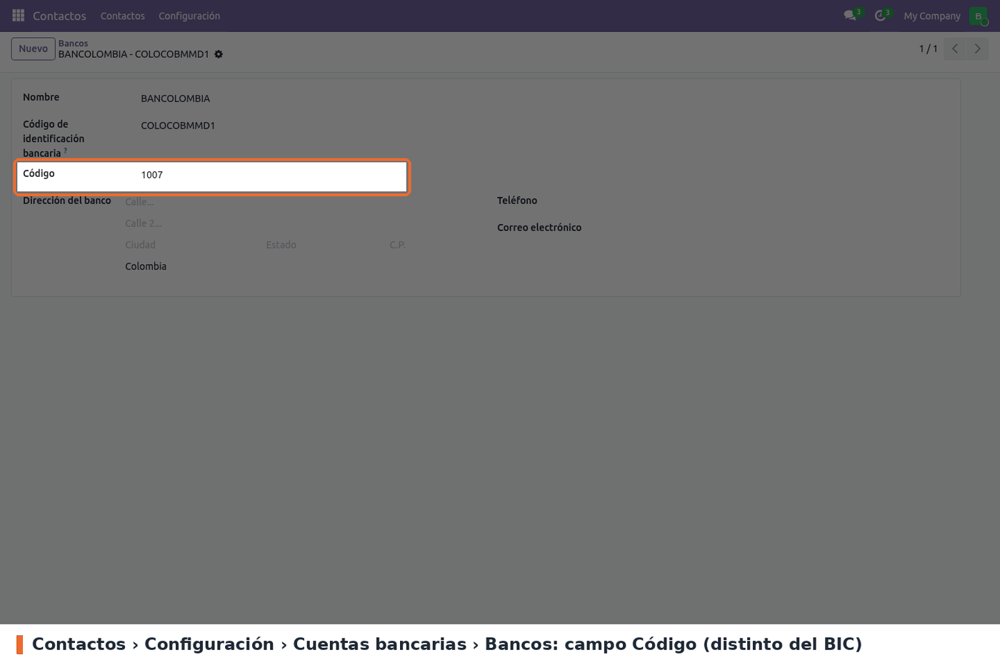
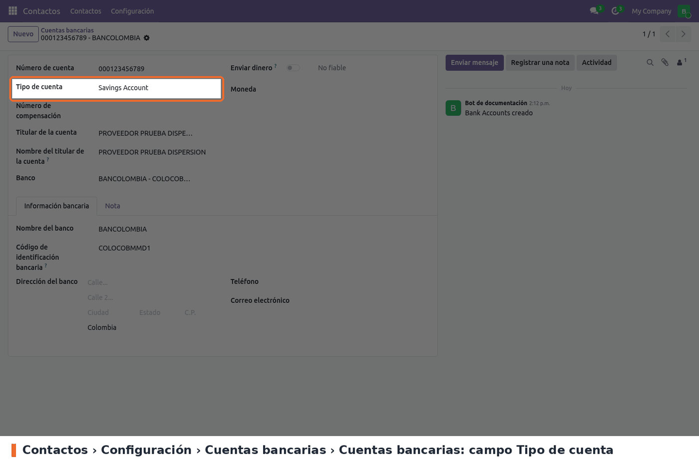
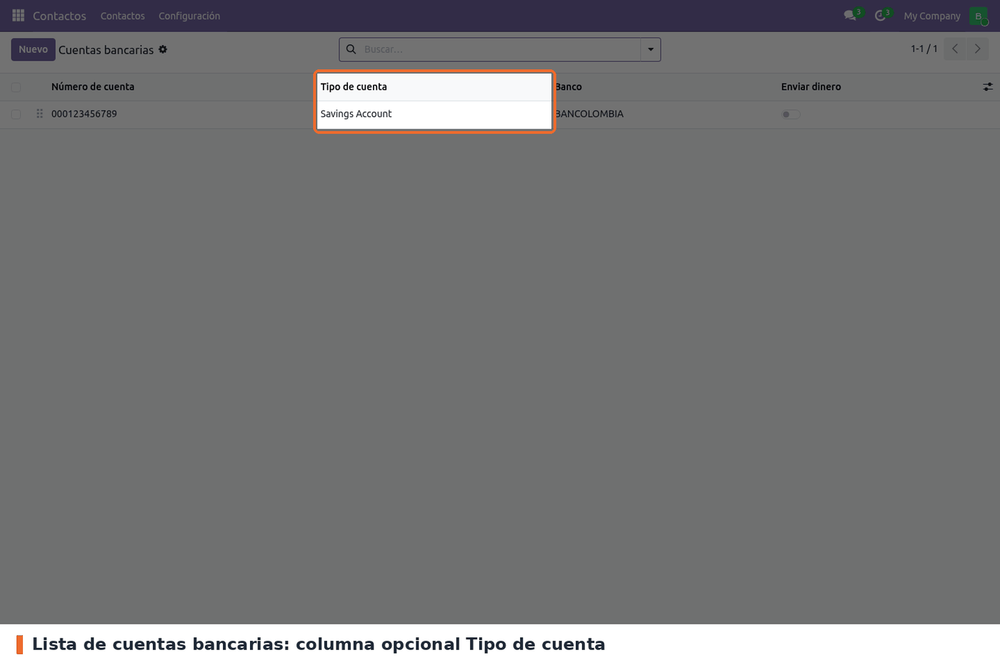
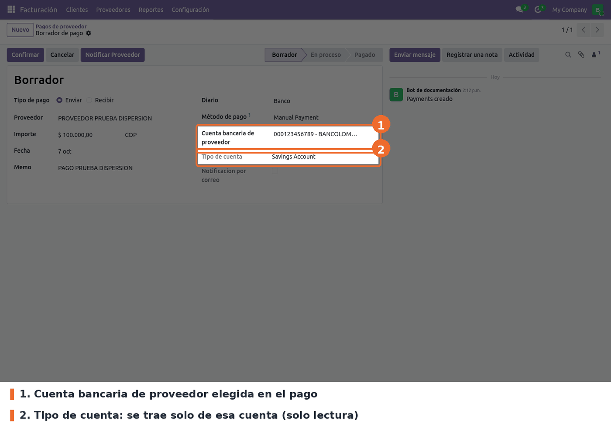
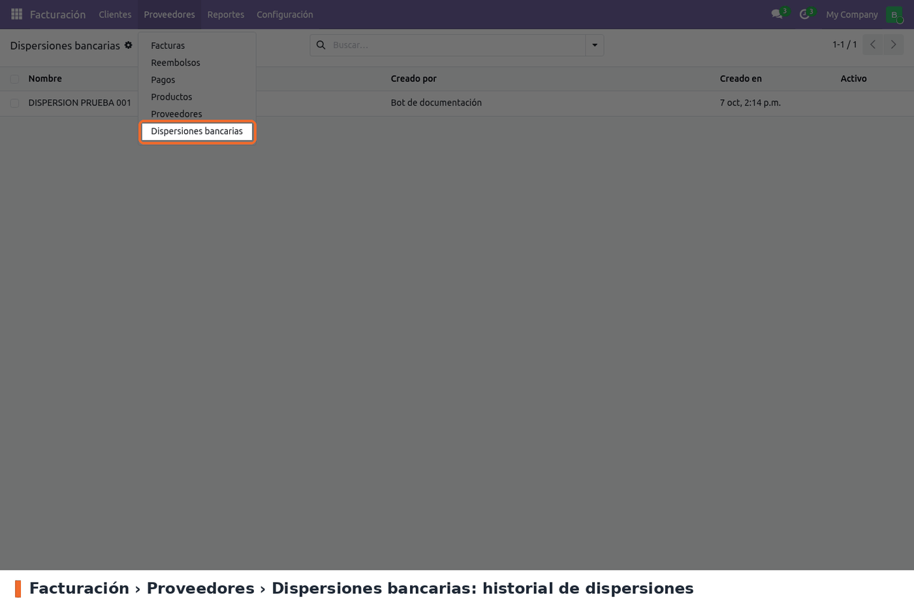
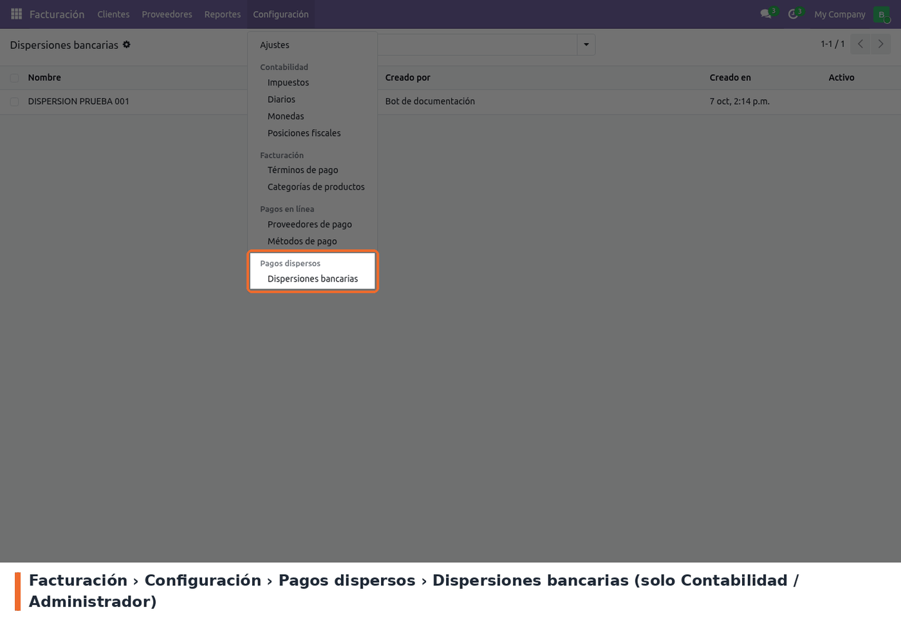
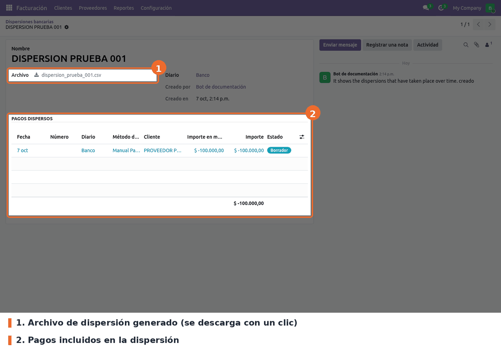

Base de la dispersión de pagos a proveedores para Colombia. Deja en Odoo los datos que necesita un archivo de dispersión bancaria y guarda el historial de las dispersiones hechas.
Este módulo no genera archivos por sí solo: los generan los módulos de cada banco
(bancolombia_payment_dispersal, banco_de_occidente_payment_dispersal), que se apoyan en él.
No hay ajustes que activar. Lo que hay que dejar bien cargado son los datos de bancos y cuentas.
1. Código del banco. Los 68 bancos colombianos se instalan con el código ya puesto. Para revisarlo o cargarlo en un banco nuevo: Contactos › Configuración › Cuentas bancarias › Bancos, campo Código.

Contactos › Configuración › Cuentas bancarias › Bancos: campo Código
2. Tipo de cuenta del proveedor. En cada cuenta bancaria de proveedor que se vaya a pagar por dispersión: Contactos › Configuración › Cuentas bancarias › Cuentas bancarias, abrir la cuenta y elegir el Tipo de cuenta. El banco de la cuenta tiene que ser uno con Código.

Contactos › Configuración › Cuentas bancarias › Cuentas bancarias: campo Tipo de cuenta
La lista de cuentas bancarias trae la columna Tipo de cuenta (opcional, visible por defecto), para revisar de un vistazo qué cuentas faltan.

Lista de cuentas bancarias con la columna Tipo de cuenta
A tener en cuenta:
En el pago a proveedor. En Facturación › Proveedores › Pagos, un pago saliente con diario de banco y un método que pida cuenta (por ejemplo Manual Payment) muestra la Cuenta bancaria de proveedor y, debajo, su Tipo de cuenta. No se edita en el pago: viene de la cuenta bancaria. Si sale vacío, hay que completarlo en la cuenta (ver Configuración).

Pago a proveedor: Tipo de cuenta debajo de la cuenta bancaria del proveedor
El pago a proveedor trae además una zona de pestañas vacía (dispersion_banks) donde los módulos
de cada banco agregan sus datos. Con solo este módulo instalado no se ve nada ahí.
Historial de dispersiones. Facturación › Proveedores › Dispersiones bancarias lista las dispersiones hechas, con quién y cuándo las creó.

Facturación › Proveedores › Dispersiones bancarias
El mismo historial está en Facturación › Configuración › Pagos dispersos › Dispersiones bancarias, solo para Contabilidad / Administrador.

Facturación › Configuración › Pagos dispersos › Dispersiones bancarias
Cada dispersión guarda el archivo que se mandó al banco, el diario y los pagos que incluyó. Es de solo lectura: no se crea ni se edita a mano, la crean los módulos de cada banco al generar el archivo. Las dispersiones archivadas se ven con el filtro Archivado y una cinta roja.

Dispersión: archivo generado y pagos dispersos
bancolombia_payment_dispersal y banco_de_occidente_payment_dispersal son los que llenan la
pestaña dispersion_banks del pago y de la cuenta bancaria y crean las dispersiones. Hasta
migrarlos, este módulo solo guarda datos (código de banco, tipo de cuenta) y muestra el historial.many2many_tags_banks)
y ya no hay columna. Por eso la vista heredada pasó a la lista de cuentas bancarias.account_payment_dispersion_inherit_view_partner_property_form
era en 17 una vista de res.partner y en 19 es de res.partner.bank (hereda de
base.view_partner_bank_tree). Antes del -u en STG/producción, comprobar que ninguna vista
herede de ella:
SELECT id, name, model FROM ir_ui_view WHERE inherit_id = (SELECT res_id FROM ir_model_data WHERE module = 'account_payment_dispersion' AND name = 'account_payment_dispersion_inherit_view_partner_property_form');
En local da 0 filas..po heredados de 16, las opciones
(Sin Cuenta, Cuenta corriente, Cuenta de ahorro, Cuenta nómina) estaban marcadas como
texto de código (#: code:), y Odoo no las aplicaba a la selección. En 19 se marcaron como
model:ir.model.fields.selection con el mismo texto. El -u no pisa un nombre que ya esté en
la base: solo completa los idiomas que faltan (TranslationImporter.save, overwrite=False).
Las capturas 02 a 04 se tomaron antes del arreglo y muestran Savings Account. Para revisar en
STG antes y después del -u:
SELECT d.name, s.name FROM ir_model_fields_selection s JOIN ir_model_data d ON d.model = 'ir.model.fields.selection' AND d.res_id = s.id WHERE d.module = 'account_payment_dispersion';security/ir.model.access.csv da lectura a
account.group_account_readonly sobre las dispersiones y sus campos. En 17 no existía. Se
mantiene: es el mismo patrón que usa el core para account.payment y permite que un usuario de
solo lectura (auditor) vea el historial sin poder modificarlo.data/res.bank.csv no se carga. No está en data del manifiesto. Los bancos salen de
data/res_bank_data.xml (noupdate, así que un -u no corrige cambios hechos a mano).active con
invisible="1", que en listas oculta la celda pero no la columna (igual en 17). Se arregla con
column_invisible="1"._description del modelo, que es una frase larga.static/description/icon.png mide 300x300 px; los módulos del core usan 100x100 px.